Clash: the onboarding of an app that gathers all your benefits in one place
Clash is an Argentine app that brings together, in one place, the benefits a person already has: from their bank, their health plan, their fintech, their employer. I designed its onboarding end to end: research, definition, prototype, user testing and high-fidelity design.
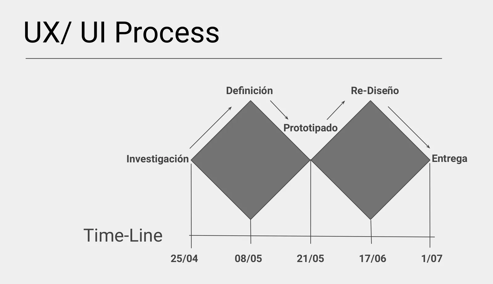
What Clash is, and for whom
A benefit is a discount, a promotion or a chance to save. Almost everyone has several and does not use them: from the bank, the health plan, the digital wallet, work. Clash gathers them in a single app, on iOS and Android.
The app was born in Rosario inside Rosental Inversiones, a very well-known Rosario group with businesses in capital markets, real estate and linked companies. La Capital, the Rosario newspaper, covered the launch: Rosental created an app that concentrates all the promotions.
My brief was the onboarding: the path from the moment someone installs the app until they see their benefits. How do we ask a person for their banks, their health plan and their interests without losing them before they see the value?
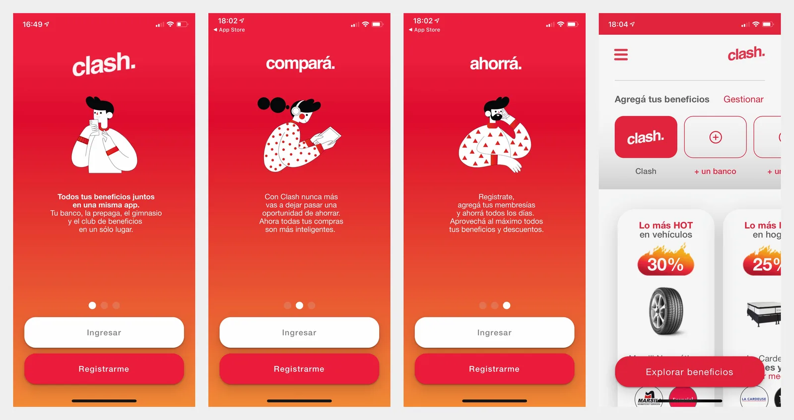
Research
Four weeks, from late April to late May: a review of the benefits, an audit of the existing onboarding, an actor map, benchmarking, surveys and interviews.
What a benefit really is
I started by taking the object apart. A benefit can be stackable or not; it applies through a card, a program, a wallet, a platform, a health plan or a coupon; it has an access criterion (employees, customers, members); an availability (period, days of the week, while stocks last); a condition (2-for-1, free shipping, financing, points redemption, discount with a minimum purchase); a cap per user, per purchase or per period, and a category. Its many attributes are what make the system complex.
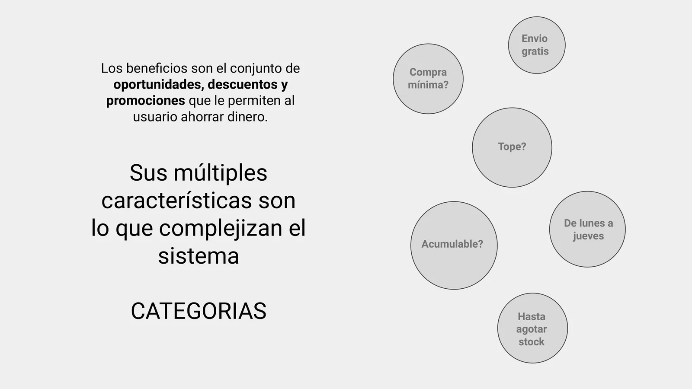
Who creates the benefit and who uses it
The actor map shows five: users, aggregators (banks, health plans, employers), entities (the merchants), competitors, and the benefit in the middle. Aggregators are almost always the creators of the benefit, sometimes in partnership with the entities. Competitors link users to benefits directly and step in between the user and the entities.
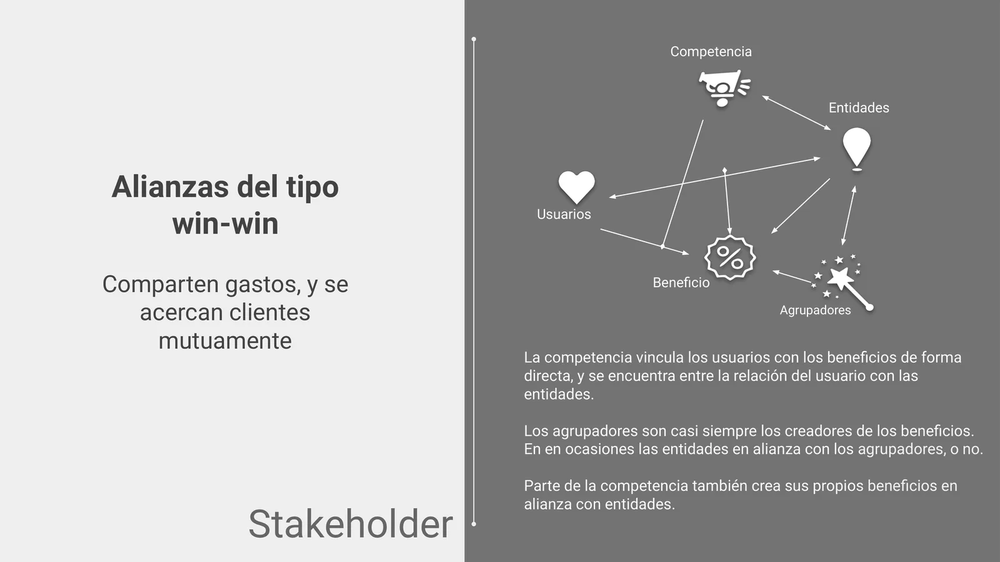
What the other apps do
I compared Yelp, Mercado Pago, Brubank, Tindeo, Beneffit Pro, Black Friday and Discount Calculator. Each one focuses on one of three things: when to buy, where to buy or what to buy. None focuses on the benefit and none links directly to the aggregators. What they do is empower with information: spending history, wish list, savings calculator, interactive map, price comparison. The question that remained: how does the onboarding teach the value of the app while it collects information?
Surveys
I asked which aggregators they are customers of, whether they use the benefits and how they find out about them. The numbers come from the survey I ran for the project.
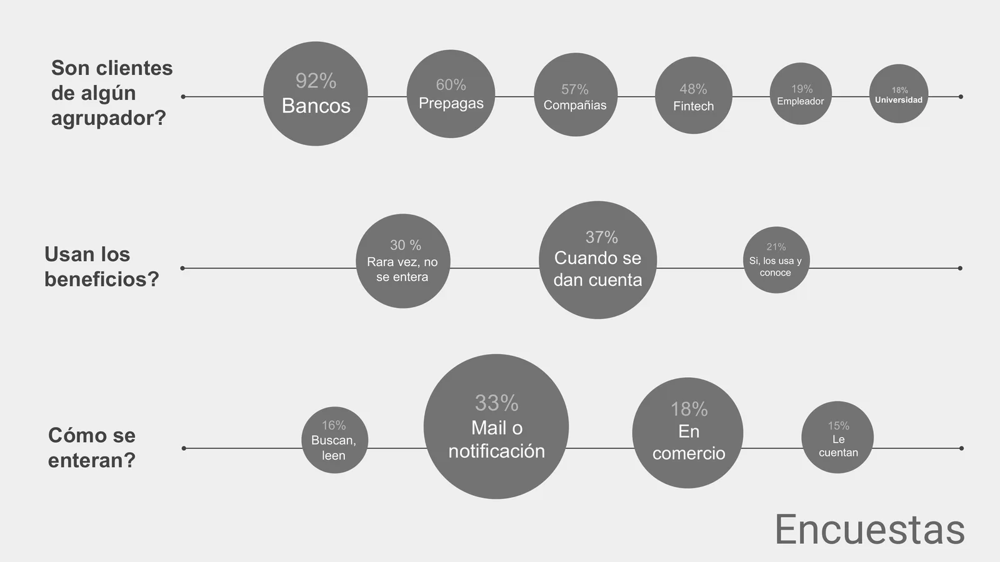
| Question | Most frequent answers |
|---|---|
| Are they customers of an aggregator? | Banks 92%, health plans 60%, companies 57%, fintech 48%, employer 19%, university 18% |
| Do they use the benefits? | When they notice them 37%, rarely because they never find out 30%, yes, they use and know them 21% |
| How do they find out? | Email or notification 33%, at the store 18%, they search and read 16%, someone tells them 15% |
Interviews
The interviews surfaced the relationship between income and benefits, and it is not linear. When income rises, the possible benefits rise and the person can choose; frequency depends on interest and habit. When income falls, access falls and frequency rises: supermarket cards, coupons and the most popular benefits. A benefit is valuable for two reasons (a tight budget and not knowing) and at two moments: when it matches a need and, above all, when it matches a sacrifice, like a big purchase or one in instalments.
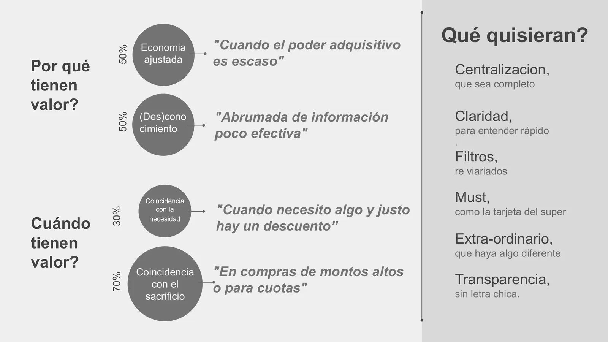
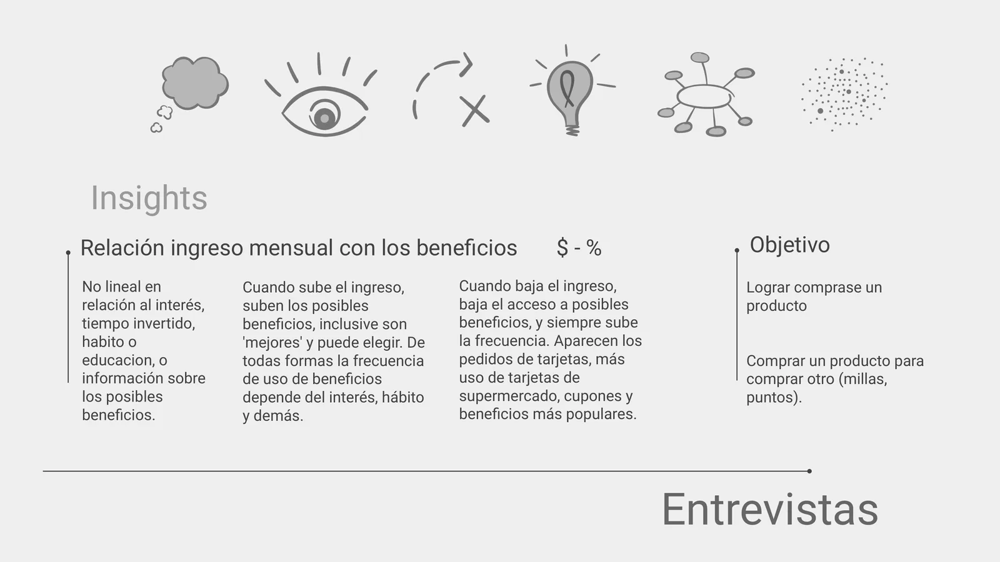
Swipe sideways or use the arrows. Tap a screenshot to enlarge it.
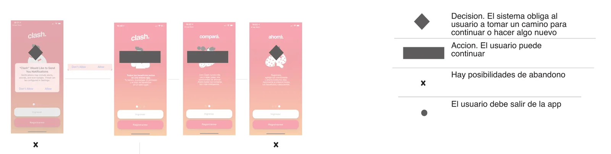
Definition
With all of that I built the empathy map, the mind map, the clusters and the insight table, and from there came two personas and the flow.
PERSONA 1
"I need to save wherever I can." A mother of three; everyone works. Buying things is hard for them, but they manage. She learned to always look for the best deal and keeps a constant eye on her spending.
PERSONA 2
"I have no time." He is 28 and supports himself. He studies, works, runs from place to place. He knows there are discounts, but he does not pay attention and finds out late. Everything about the bank bores him.
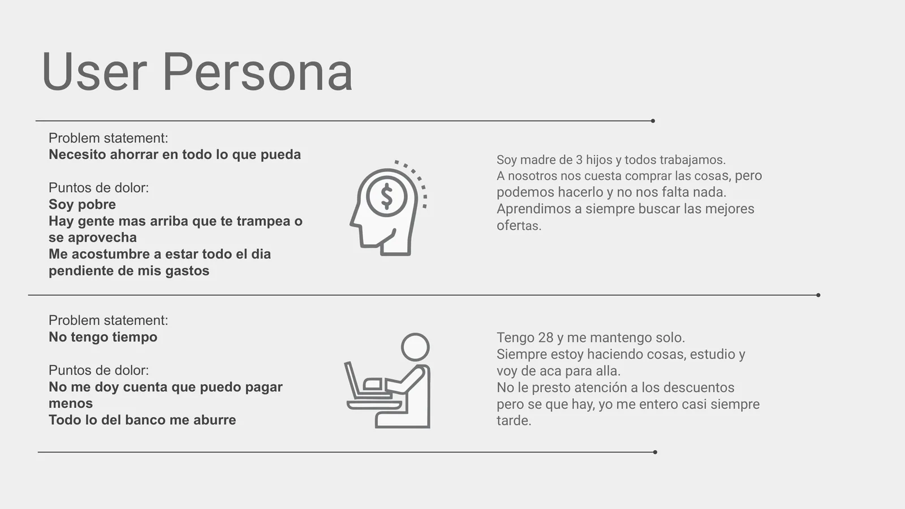
The onboarding flow ended up like this: welcome, authentication, choose the aggregators, choose the interests, choose the channels, an animation while the app looks for the benefits, and the home. "How it works" stays within reach from the welcome screen for anyone who wants to understand before signing up.
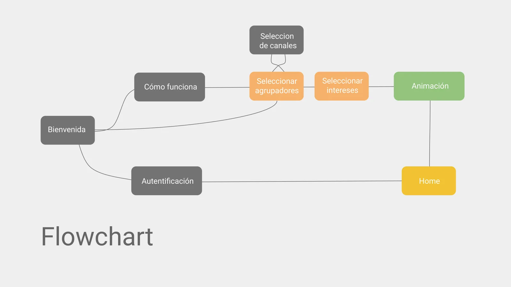
Prototype
I prototyped it in Figma, low fidelity, to test it before drawing anything in high fidelity. Two steps: first the services (banks, health insurance and health plans, universities, phone and internet), with a search box and a "can't see your bank? request it"; then the categories of interest as chips. A waiting screen says "we are looking for the best benefits for you" and the home arrives already built with the linked memberships.
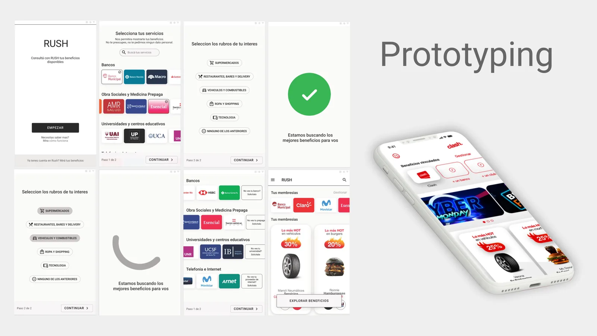
User testing and A/B
Two hypotheses: that people manage to link their services and choose their preferences with a positive experience, and that they understand the value of Clash during the onboarding. The goal was to confirm a positive experience and identify where the expected flow breaks.
How I tested it
A Figma prototype, sessions over Meet with a silent observer, and role play: each participant received a profile with their banks, their health insurance and their phone company, and the task of creating the account. In Maze I integrated the five-second test and the Borg perceived-effort scale; to that I added think-aloud and the echo, boomerang and Columbo facilitation techniques.
| Measure | How it is scored |
|---|---|
| Success rate | 1 if they complete the task, 0.5 if they complete it only partly, 0 if they do not finish it. |
| Efficiency | Time spent on the task, average in seconds. |
| Quick understanding | Result of the five-second test: 1 if they understood, 0.5 if they hesitated, 0 if they did not understand. |
| Perceived effort | A direct question on a scale, from very light to very heavy, and why. |
| Quotes and notes | Clustered at the end, with triangulation of observers and of methods. |
I chose four participants with a two-way table: money and time. Whether they spend time reading about benefits or not, and whether they support children, support themselves, or someone supports them.
What I found
- They need to verify their data. They want to be sure they added a service correctly.
- They ask for more noticeable feedback. The confirmation of each selection has to be visible.
- They expect to see a personalized home after telling the app about themselves.
- Search or browse. There are two ways to reach a benefit, searching or browsing, and both have to be there.
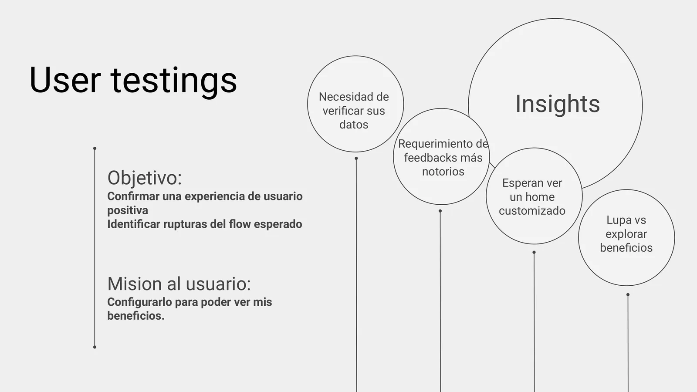
A/B: "How it works"
For the screen that explains the app I tested two versions. A, general: "how to buy a product or service and apply a discount". B, specific: "link accounts and services, all from a single app". The mission was to look at how it works and say what they understood. With B everyone named their own benefits; with A the answers were split between own benefits, everyone's benefits, and filtering and searching for products. The specific one went into the redesign.
| What they understood | B, specific | A, general |
|---|---|---|
| Own benefits | 100 % | 67 % |
| Plan | 50 % | 33 % |
| Pay | 50 % | 33 % |
| Everyone's benefits | 0 % | 67 % |
| Save | 0 % | 33 % |
| Filter and search for a product | 0 % | 67 % |
| Filter and adjust a benefit | 0 % | 33 % |
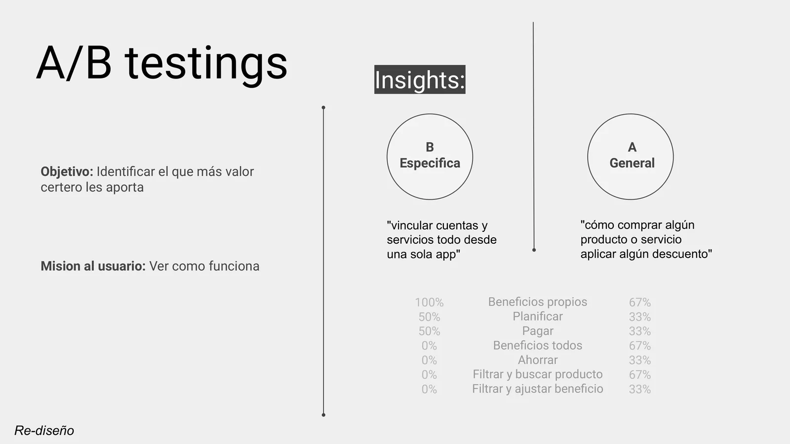
The high-fidelity design
With the findings I moved to the high-fidelity design on the Clash brand: the welcome with the promise ("the benefits from your banks, health plans and other entities in one place"), and step 1 of 3, select your banks, with a search box, big logos, checkboxes and a counter of what is selected that answers what people asked for in the tests. The delivery was in Figma, with the interactions verified.
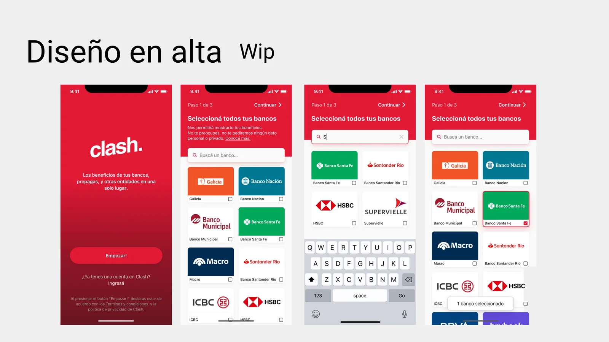
What I took away
- The object before the screen. Until I took apart what a benefit is (cap, condition, access, category) I could not decide what to ask the person for, and in what order.
- Measuring the qualitative. Four people are enough to find where a flow breaks, if every task has a success rate, a time and a perceived effort, and if two observers compare notes.